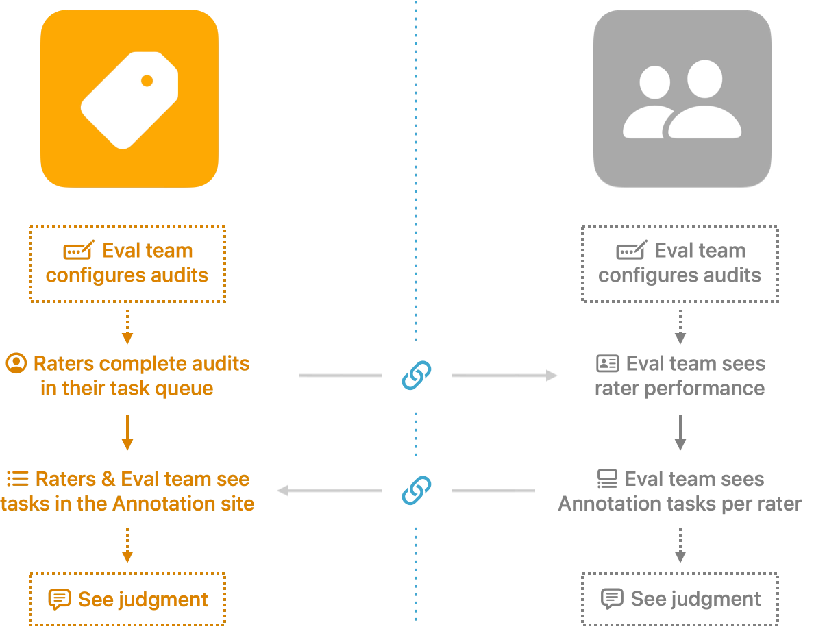

Tool Suite Decoupling
Challenge
One internal platform had grown to cover five distinct workflows under a single roof. Features were hard to find, and it was getting harder for the team to reason about ownership as the platform scaled.
Outcome
Mapped the platform's full feature set to find where functionality was genuinely shared versus workflow-specific, then used that map to plan a phased split into focused, single-domain tools. A working demo is still in progress.
My RoleLead Designer
AudienceEngineers, cross-org stakeholders
ToolsAI, Markdown, GitHub
Background
One Platform, Growing Pains
The platform's home page was originally built around a user's favorites. However, we noticed many users weren't adding any; meanwhile we were adding new capabilities that made the platform more powerful, but burying them in menus. People weren't using what they didn't know was there.
We tried surfacing those features directly on the home page, along with stats on what the platform could do. But the page filled up and people still couldn't find what they needed. We'd added information that wasn't user-friendly and readable.
Discussion began about breaking the platform into separate, dedicated tools, and I set out to test the idea.


In Theory: Site Planning
I went through every workflow on the existing platform and sorted it into what looked like five core domains. To find where those domains actually depended on each other, I had an AI assistant scan the underlying codebase and catalog every piece of functionality. That surfaced infrastructure that was genuinely shared across domains, things like user access, data pipelines, and management of vendors who work across more than one area, and wasn't clearly owned by any single one.
With that map, I planned a way to handle the shared, cross-domain functionality on its own, separate from each domain's dedicated workflows, and started building individual sites with clean, focused landing views for each.

In Reality: Where's the Line?
Some workflows didn't split as cleanly as the plan suggested. Audit tasks were a good example: it made sense for the people completing them to see them alongside their everyday work in one tool, but it wasn't obvious whether the team requesting those audits should configure them from that same tool or from their own, or where they should go to review the finished results.

Adjusted Plan
Rather than force an even five-way split up front, phase one separates just the two workflows that turned out to be least entangled with the others, while the remaining domains stay grouped together behind shared infrastructure for now. It's not a perfectly even split, but it keeps genuinely coupled workflows together instead of forcing a boundary that doesn't match how people actually work.

Status
An interactive demo of the phase one split is still in progress. Check back soon.